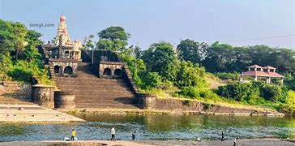

Satara is a city located in the Satara District of Maharashtra state of India, near the confluence of the river Krishna and its tributary, the Venna.[2] The city was established in the 16th century and was the seat of the Chhatrapati of the Maratha Kingdom, Shahu I.
It is the headquarters of Satara Tehsil, as well as the Satara District.
The city gets its name from the seven forts (Sat-Tara) which are around the city. The city is known as a Soldier's city as well as Pensioner's city. The city had a population of 179,147 in 2011.
The first known Muslim rule of the Deccan took place in 1296. In 1636, the Nizam Shahi dynasty came to an end. In 1663, Shivaji conquered Parali and Satara fort. After the death of Chhatrapati Sambhaji (Son of Chhatrpati Shivaji Maharaj), Shahu, heir apparent to the Maratha Kingdom, was captured by Mughals when he was only seven years old. He remained their prisoner until the death of Aurangzeb in 1707.
The dowager Maharani Tarabai proclaimed her son, Shahu's younger half-brother Shahu Sambhaji, as the Chhatrapati Maharaj under her regency. The Mughals released Shahu under certain preconditions in 1707. The Marathas would face an internal war for the throne. Shahu returned to the Maratha+ Kingdom and claimed his inheritance.
Aurangzeb's son Muhammad Azam Shah conquered the Satara fort Ajinkyatara after a 6-month siege, later won by Parshuram Pratinidhi in 1706. In 1708, Chattrapati Shahu, the son of Chhatrapati Sambhaji, was crowned at the Satara fort. The direct descendants of Shivaji continue to live in Satara. Chhatrapati Udayanraje Bhonsle is the 13th descendant of Shivaji.
Satara was the first state to be annexed by British Governor-General Dalhousie’s policy of ‘Doctrine of Lapse’ in 1848.
A shadow government was established in Satara.
Back